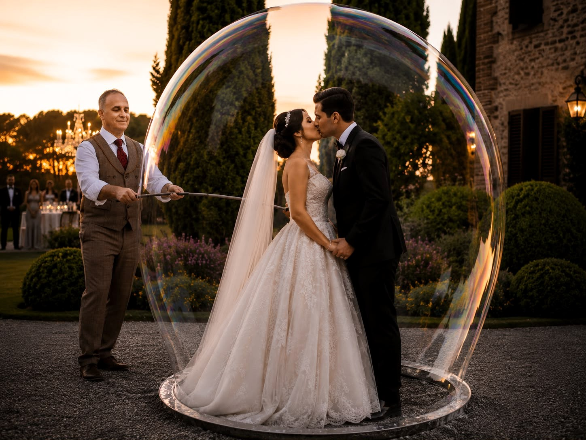

Bubble Experience · Wedding entertainment
A finale to experience. And remember.
The Bubble Experience turns the reception into a visual performance, ending with a portrait of the couple inside a giant bubble.
Based in Rome · Available throughout Italy · Paolo Musetti

The experience
Bubble Experience
Bubbles, light and ephemeral forms create a visual performance for every guest.
The finale places the couple at the centre: a portrait inside a giant bubble, made to become a special photograph.
Paolo coordinates timing and space with the planner and venue.
For your wedding
A moment planned with care.
Share the date, venue and guest count to discuss the right format for your wedding.
Check the date on WhatsApp